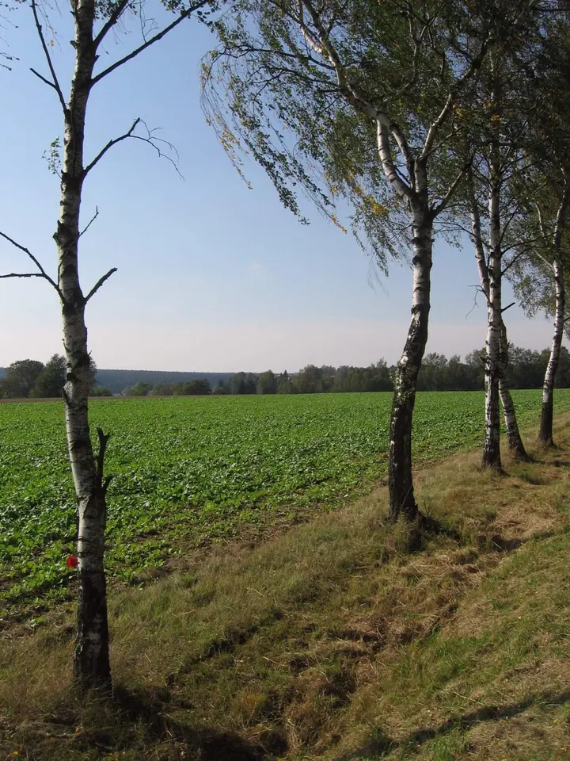
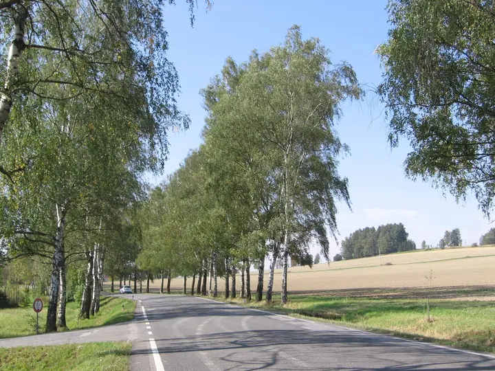
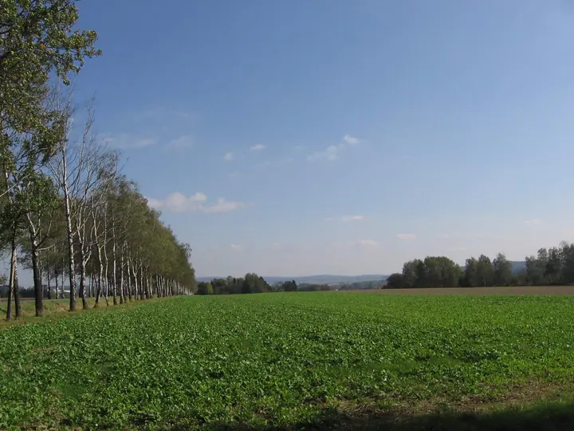

01 / 03
Dokumentační fotografie
Fotím obce, stavby, cesty a jejich proměny tak, aby snímky posloužily jako věrný záznam místa. Fotografie pak slouží jako úložiště pro další zpracování.
Zeptat se na termín→


Fotím cestou pěšky, na kole i vlakem
Zeptat se na termín →(01) Ahoj
Jmenuji se Jan Maňák a fotím místa, kudy vedou mé cesty: aleje a pole kolem silnic , obce a jejich stavby i lidi na společných výletech . V Atelieru Svatopluk v Litni pracuji jako fotograf dokumentačních a reportážních snímků.
(02) Co fotím
01 / 03
Fotím obce, stavby, cesty a jejich proměny tak, aby snímky posloužily jako věrný záznam místa. Fotografie pak slouží jako úložiště pro další zpracování.
Zeptat se na termín→02 / 03
Dokumentuji výlety, terénní cvičení a společné akce. Zachycuji průběh dne tak, jak se opravdu odehrál.
Zeptat se na termín→03 / 03
Z pěších túr, cest na kole a vlakem přináším snímky alejí, polí a míst podél tras. Od roku 2014 fotím Naučnou stezku Liteň pro Wikimedia Commons.
Zeptat se na termín→(04) Postup
Od první zprávy po hotovou galerii.
Krok 1 z 4
Ozvěte se mi telefonem nebo e-mailem a popište, které místo nebo akci je potřeba zdokumentovat.
Krok 2 z 4
Na místo se vydám pěšky, na kole nebo vlakem a fotím ho tak, jak opravdu vypadá, i s okolím a cestou k němu.
Krok 3 z 4
Fotografie projdu, vyberu ty použitelné a seřadím je do přehledného alba.
Krok 4 z 4
Album nahraji na Zoneramu, kde si snímky můžete prohlédnout a stáhnout pro další použití.
Každá cesta stojí za to, aby po ní zůstal snímek
(05) Za objektivem
Vystudoval jsem Matematicko-fyzikální fakultu Univerzity Karlovy v Praze. Dlouhá léta jsem pracoval v Českém hydrometeorologickém ústavu, kde jsem spolupracoval na softwaru SYMOS97 pro analýzu ovzduší, a později jako programátor. Vždycky jsem ale rád chodil, jezdil na kole a fotil.
Po vážné dopravní nehodě se s pomocí odborníků z Kliniky rehabilitačního lékařství 1. LF UK, přátel a dalších organizací vracím do běžného života. Jednou z cest je pro mě právě dokumentační a reportážní fotografie. Po roční průpravě pro mě Atelier Svatopluk v Litni s podporou Úřadu práce v Berouně vytvořil chráněné pracovní místo fotografa.
Od roku 2014 zveřejňuji snímky z Naučné stezky Liteň na Wikimedia Commons, odkud se dostávají i do článků na Wikipedii. Moje galerie na Zoneramě je otevřená turistům, cykloturistům, školám i všem, kdo mají rádi přírodu a památky. Když si některý snímek stáhnete pro svou prezentaci, uveďte prosím autora.
Jan
Jan Maňák · Dokumentační a reportážní fotograf
Ano. Stáhněte si snímek, který se vám hodí, a použijte ho ve své prezentaci s odkazem na autora a jeho příběh.
Na mé galerii na Zoneramě, na portálu Fototuristika a také na Wikimedia Commons na stránkách Naučné stezky Liteň.
Hlavně v Litni a okolí, na Berounsku a Karlštejnsku, a pak všude, kam mě zavede pěší túra, kolo nebo vlak.
Stačí přeposlat odkaz na mé galerie přátelům a kolegům, galerie navštěvovat nebo je sdílet na sociálních sítích.
(07) Kontakt
Napište pár vět o tom, co si představujete, a termín, který se vám hodí.
p.stemberk@seznam.cz